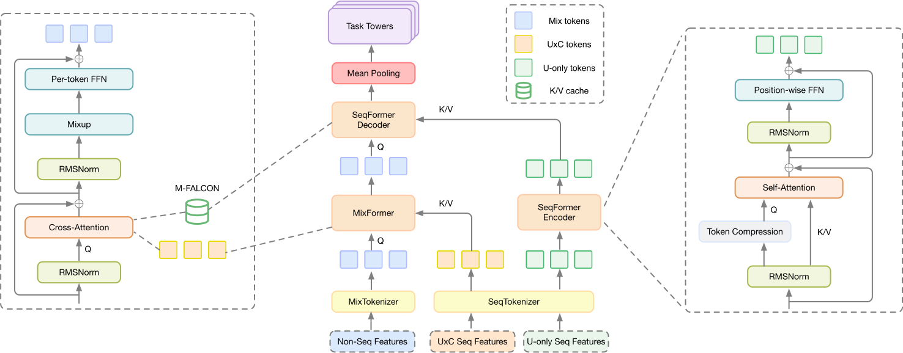
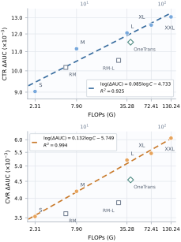
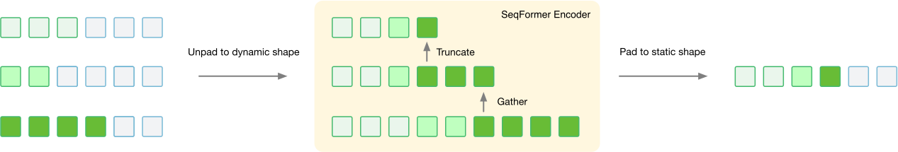

HELIX：净化与统一——对大规模推荐中特征交互与序列建模的再思考
摘要
工业推荐排序模型通常沿两条建模轴进行扩展：对异构的用户、物品、上下文和交叉特征进行特征交互，以及对长程、信息丰富且多类型的用户行为历史进行序列建模。 我们发现，单独扩展任一能力都不充分，因为二者各自都存在有限的缩放上限和次优的缩放定律斜率。我们推测，要实现更有利的缩放定律斜率，需要同时扩展这两条轴。为支持这一观点，我们提出 HELIX，一种用于大规模推荐的精简且统一的架构。HELIX 将序列检索与特征交互交错进行，同时强制信息从可复用的序列状态单向流向以候选为条件的混合词元。 该设计在保持两条建模轴之间跨深度通信的同时，使用户侧序列计算可被摊销，从而支持序列建模与特征交互的灵活且非对称扩展。HELIX 部署于 TikTok 的电商推荐系统中，持续提升离线 CTR AUC、CVR AUC 及其他排序指标。在线 A/B 测试中，其使每用户电商视频 GMV 提升约 6%。

1 引言
工业推荐排序模型处于两个建模问题的交汇处。第一个是特征交互：给定大量用户、物品、上下文和交叉特征，模型必须发现对 CTR、CVR 和 GMV 等分类与回归目标具有预测性的高阶组合。 FM、DeepFM 和 DCN Rendle (2010); Guo et al. (2017); Wang et al. (2017) 等经典架构通过强归纳偏置编码人工设计的交互模式。它们在中等模型规模下表现良好，但随着宽度和深度的增加，其收益往往很快饱和，且更大的变体可能越来越难以优化。第二个是序列建模：模型必须解读行为轨迹，以识别用户意图和与候选相关的证据。DIN、DIEN 和 DSIN Zhou et al. (2018, 2019); Feng et al. (2019) 等目标感知序列模型已将候选条件化的行为聚合作为工业排序系统中的标准组件，但其相对浅层的聚合限制了序列建模容量增加所带来的收益。
近期工作已开始分别解锁各条轴上的扩展。在特征交互方面，Wukong、RankMixer 和 TokenMixer-Large Zhang et al. (2024); Zhu et al. (2025); Jiang et al. (2026) 将异构特征嵌入词元化，并应用稳定的残差模块，使特征交互类似于可扩展的词元处理骨干。在序列建模方面，HSTU、Ultra HSTU 和 STCA Zhai et al. (2024); Ding et al. (2026); Guan et al. (2026) 表明，随着序列建模容量的增长，更丰富的注意力模块可以带来可预测的收益。
然而，仅扩展任一条轴都会使另一条轴成为瓶颈。近期出现的统一架构，如 InterFormer Zeng et al. (2025)、Kunlun Hou et al. (2026) 和 OneTrans Zhang et al. (2026)，将特征交互与序列建模纳入共享骨干，使两种能力能够跨堆叠层通信并联合扩展。
统一设计面临三个局限。第一，TokenMixer 和 UniMixer Jiang et al. (2026); Ha et al. (2026) 表明，自注意力未必是异构词元最有效的特征交互算子。第二，OneTrans、SORT Wang et al. (2026) 和 MTFM Song et al. (2026) 等单步设计在同一步建模中执行特征交互和序列检索，这可能使混合词元注意力分散到异构的非序列输入上，从而削弱行为检索。第三，InterFormer 和 Kunlun 等双向设计允许以候选为条件的特征更新用户侧序列状态，使这些状态依赖候选，从而阻止用户侧计算在生产环境中借助 M-FALCON Zhai et al. (2024) 跨候选摊销或借助用户级训练跨样本摊销。
为解决这些局限，我们提出 HELIX，一种用于大规模推荐的精简且统一的架构。它之所以是统一的，是因为序列检索与特征交互通过网络交错进行，而非被分隔为两个阶段。它之所以是净化的，是因为它避免了额外的架构组件和训练目标，如 LHUC、DCN-M、FM 模块、跨层残差连接和辅助损失，仅保留特征交互与序列建模所必需的操作。 其骨干还强制信息从可复用的序列建模分支单向流向以候选为条件的特征交互分支。具体而言，金字塔式序列编码器首先根据用户行为历史构建与候选无关的缓存。随后，以候选为条件的混合词元反复关注该缓存，并执行 Mixup-PerToken-FFN——TokenMixer 交互模块的一种简化变体。该设计为两种操作赋予了清晰的角色：注意力从可复用的用户侧缓存中检索行为证据，而词元级前馈交互则为当前候选更新异构特征词元。
我们的贡献如下：
-
•
我们提出 HELIX，一种交错架构，它统一了特征交互与序列建模，同时保持用户侧计算的可复用性，从而在生产系统中实现 M-FALCON 和用户级训练的摊销。
-
•
我们提供缩放定律分析，表明 HELIX 将额外的模型容量和计算转化为一致的排序质量提升。
-
•
我们报告了将 HELIX 部署于 TikTok 电商视频推荐系统所带来的显著离线和在线提升。
2 HELIX
在介绍 HELIX 之前，我们简要描述任务设置。我们考虑大规模电商视频推荐系统中的精排，其中排序模型在当前上下文下为用户对一组候选视频打分。在生产环境中，模型联合预测多个分类和回归目标，包括点击、转化以及与 GMV 相关的结果。对于用户 和候选视频 ，预测结果写为
| (1) |
其中 包含非序列的用户、视频、上下文和交叉特征； 表示与候选无关的仅 U 行为序列； 表示以候选为条件的 UC 行为序列； 表示可训练参数。仅 U 历史由同一用户请求的候选共享，而 和 依赖于被评分的候选。任务预测随后被组合为最终排序分数 ，其决定候选视频的排序，其中 表示多任务预测融合函数。
2.1 架构概览
给定这一输入划分，HELIX 维护三个词元流。MixTokenizer 将异构的非序列特征 映射为 个以候选为条件的混合词元。SeqTokenizer 分别将与候选无关的用户历史 和以候选为条件的 UC 历史 映射为两个序列词元流：
| (2) |
其中 、 和 。本节中我们省略批次维度。这里， 是混合词元的数量； 和 分别是非序列混合词元流和序列词元流的隐藏维度； 和 分别是仅 U 流和 UC 流的长度，其中 UC 表示使用候选信息构建的序列，如硬搜索和软搜索相似度序列。我们进一步用 、 和 分别表示 MixFormer、SeqFormer 编码器和 SeqFormer 解码器模块的数量。
图 1 展示了由此得到的计算图。SeqFormer 编码器对 处理一次，以构建与候选无关的 K/V 缓存。在候选侧，堆叠的 MixFormer 模块首先交替执行从 中的检索和对混合词元的特征交互。随后，堆叠的 SeqFormer 解码器模块交替执行从可复用缓存中的检索和相同的特征交互算子。最后的均值池化将所得的混合词元表示送入任务特定的塔。关键在于，信息从用户侧序列流流向候选侧混合词元，但绝不反向流动。因此，在恰当设计下，所得的 K/V 缓存可在服务时于同一请求内的所有候选之间共享，并在训练时于同一用户的所有样本之间共享。
2.2 三流词元化
2.2.1 MixTokenizer
MixTokenizer 将异构的排序特征转换为 个混合词元。其输入包括所有非序列类别特征和数值特征的嵌入，以及每个序列特征的均值池化表示。对于每个序列特征 ，沿序列维度进行均值池化会产生固定长度的摘要 。这些摘要为混合词元流提供来自所有 UC 序列和仅 U 序列的粗粒度信息，同时为其保留词元级表示，以供接下来描述的 SeqTokenizer 使用。
MixTokenizer 首先应用 All-Concat，将所有非序列特征嵌入和序列摘要拼接为一个向量：
| (3) |
然后应用 Auto-Split，它将 划分为固定宽度的组，并对不完整的最后一组进行零填充：
| (4) |
每个组使用独立参数化的 LayerNorm 和前馈投影进行处理，以生成一个混合词元。这种逐词元参数化保留了异构特征组各自不同的语义和输入分布。逐词元 LayerNorm 将异构词元嵌入归一化到可比较的数值范围，使分词器更易于优化。具体而言，我们采用逐词元 LayerNorm 而非逐词元 RMSNorm，因为 LayerNorm 天然引入可学习的逐词元偏移 ，其作用类似于 FAT Yan et al. (2025) 中的域感知偏置。所有其余归一化层均使用 RMSNorm，使其成为整个模型中唯一的 LayerNorm。
2.2.2 SeqTokenizer
SeqTokenizer 处理两类序列特征。UC 序列，如基于相似度的序列和物品到物品序列，包含候选侧信息，而仅 U 序列仅包含用户侧信息。在使用 个候选进行服务或使用 个样本进行训练时，仅 U 序列计算可跨候选或跨样本摊销，这与 UC 序列计算不同。
每个序列 独立映射到相同的序列维度 ，所用的可学习投影矩阵为 。随后在每个序列内分别应用位置嵌入：
| (5) |
其中 是序列 特有的位置嵌入。在拼接之前应用位置可避免在不同序列的元素之间强加全局位置关系，因为这些元素跨序列类型并不存在明确定义的相对顺序。
投影后的序列根据其依赖类型进行拼接。若干可学习的 [SINK] 词元被前置到拼接后的流中，标记每个流的开始，并充当注意力汇点 Xiao et al. (2024)：
| (6) | ||||
2.3 MixFormer
如图 1 左侧插图所示，每个 MixFormer 模块由两个连续的残差子层组成：交叉注意力从 UC 序列中检索与候选相关的信息，随后 Mixup-PerToken-FFN（MPTF）在混合词元之间执行特征交互。在异构混合词元进入模块堆叠之前，对其应用输入归一化。
MixFormer 模块 计算
| (7) | ||||
| (8) |
在最后一个 MixFormer 模块之后， 被直接传递到 SeqFormer 解码器。我们有意在此省略输出归一化，因为后续解码器（第 2.4.2 节）已对其输入进行归一化。
2.3.1 交叉注意力
HELIX 中的所有注意力模块都使用 QK 归一化、分组查询注意力（GQA）和门控注意力Qiu et al. (2025)。令 表示交叉注意力子层，其中 提供查询状态， 提供键/值状态。对于单个注意力头，我们定义门控缩放点积注意力（SDPA）如下：
| (9) |
其中 表示 sigmoid 函数。在 MixFormer 中， 包含 mix-token， 包含 UC 序列词元。查询投影矩阵 按每个 mix-token 参数化以保持异质性，而 UC 序列词元使用逐位置的 K/V/G 投影。
2.3.2 Mixup-PerToken-FFN
MPTF 简化了 TokenMixer 交互算子 Jiang et al. (2026)。令 ，并假设 可被 整除。将每个词元拆分为 个通道块，，并定义无参数的 Mixup 变换为
| (10) |
因此每个输出词元都会从每个输入词元接收到一个通道切片。随后带有 SwiGLU 激活的逐词元 FFN 执行非线性交互：
| (11) |
Mixup 提供了显式的跨词元通信，而无需自注意力所使用的二次注意力图；同时逐词元投影保留了特征组的异质性。重复堆叠交叉注意力与 MPTF 能够以交错的方式实现序列检索和特征交互。
2.4 SeqFormer
SeqFormer 使用编码器将仅含 U 的历史转换为可复用的用户侧 K/V 缓存。其解码器使候选侧 mix-token 能够反复从该缓存中检索信息。
2.4.1 SeqFormer 编码器
如图 1 右侧插图所示，每个编码器块包含两个残差子层：自注意力，随后是逐位置 FFN。
令 表示进入编码器块 的有效状态，令 表示用作查询和残差分支的保留状态。源状态与保留状态构造如下
| (12) | ||||
随后注意力投影计算为
| (13) | ||||||
块更新为
| (14) | ||||
| (15) |
编码器通过逐步减少查询状态数量、同时保留所有当前状态作为键和值来进一步降低成本。它遵循预定义的压缩计划
| (16) |
其中 是用于构建缓存而保留的用户侧状态数量。Gather 通过从每个源序列中提取最近的词元来执行第一次压缩。每个序列根据特征重要性分析获得一个词元预算 ，Gather 在将所有选中的状态打包成一个查询流之前，选择其 个最近的 有效状态。遵循 Ultra HSTU Ding et al. (2026) 的直接截断策略，后续块保留该流的一个逐渐收缩的前缀。保留的查询状态在压缩之前关注当前层中的所有有效状态。
最终编码器块将这些状态投影到 K/V 缓存：它省略 SDPA、输出投影和逐位置 FFN，仅应用 K/V 投影和值门控。
| (17) |
由此得到的用户侧 K/V 缓存为 。如图 3 所示，变长的 K/V 张量被重新填充回具有固定最大长度的静态形状， 表示其有效位置掩码。
与 MixFormer 和 SeqFormer 解码器不同，SeqFormer 编码器使用共享的逐位置 FFN，因为仅含 U 的序列词元相对同质。
2.4.2 SeqFormer 解码器
解码器沿用 MixFormer 的双子层结构。它将 UC 序列输入替换为可复用的用户侧缓存，并首先应用输入 RMSNorm，。解码器块 随后从缓存中检索并应用 MPTF：
| (18) | ||||
| (19) |
这里，我们采用惰性 K/V 策略：仅 使用逐词元查询投影进行投影，而缓存的 和 直接复用，无需额外投影。随着 被逐步精炼，后续块可以利用更高阶的查询从同一 K/V 缓存中检索更丰富的模式。注意力负责序列检索，而 MPTF 负责特征交互。交替执行这些操作而不是将它们合并到单个注意力层中，可防止 mix-token 过度关注自身，否则会削弱它们从 K/V 缓存中检索有用序列信息的能力。最后的 RMSNorm 后接均值池化产生由任务特定塔用于预测的表示。
3 实验
我们在一个大规模内部工业数据集上开展全面实验以评估 HELIX。通过离线评估和在线 A/B 测试，我们旨在回答以下研究问题（RQ）：
-
•
RQ1：整体有效性与效率。 与代表性的生产排序架构相比，HELIX 在排序质量和计算成本方面表现如何？
-
•
RQ2：缩放行为。 随着模型容量和计算量的增加，联合缩放特征交互与序列建模是否能产生可预测且持续的質量提升？
-
•
RQ3：关键设计选择。 特征交互、数值稳定化、K/V 缓存构建以及注意力/残差设计中的哪些选择有助于提升排序质量？
-
•
RQ4：生产部署。 在真实推荐系统中部署 HELIX 是否能在关键业务指标上带来有意义的提升？
| CTR | CVR | Efficiency | ||||
|---|---|---|---|---|---|---|
| Model | Params | FLOPs | ||||
| RankMixer + Transformer (baseline) | – | – | – | – | 210M | 5.75G |
| RankMixer + Transformer (Large) | +0.04% | +0.15% | +0.03% | +0.19% | 1069M | 27.50G |
| OneTrans | +0.15% | +0.61% | +0.10% | +0.66% | 361M | 39.27G |
| HELIX-L | +0.21% | +0.82% | +0.17% | +1.38% | 358M | 35.28G |
3.1 实验设置
数据集与任务。
我们在从 TikTok 电商视频推荐系统收集的匿名化内部工业数据集上进行离线实验。排序模型联合预测多个用户响应和价值目标。遵循生产设置，我们将 CTR 和 CVR 作为代表性的分类任务进行报告。
基线。
指标。
离线有效性通过 AUC 和用户级 AUC（UAUC）衡量。为避免披露绝对生产指标，我们报告相对 RankMixer + Transformer 基线的相对提升。效率由非嵌入参数量和摊销前的每样本训练 FLOPs 表征。对于在线评估，我们报告针对已部署生产基线的随机 A/B 测试的相对业务指标提升。
3.2 RQ1：整体离线性能
表 1 比较了排序质量和计算成本。HELIX 在 CTR 和 CVR 指标上均优于所有比较的架构。将 RankMixer + Transformer 基线扩展到其大型配置仅带来有限的增益，表明这种两阶段架构仍然难以有效扩展。OneTrans 在单个注意力流中结合了两个阶段，但在三方面与 HELIX 不同。首先，它使用自注意力进行特征交互，而 MPTF 更适合高度异质的特征词元。其次，允许 mix-token 关注自身会使注意力偏离序列 K/V 缓存，从而削弱有针对性的行为检索。第三，OneTrans 采用因果注意力，而 SeqFormer 编码器使用完整的、非因果的注意力。因果掩码对于判别式排序是不必要的，并引入了额外的归纳偏置，例如在输入序列之间施加人为的顺序。通过将双向交叉注意力与 MPTF 交错，HELIX 有效地解决了这些局限。
3.3 RQ2：缩放行为
使用对齐的数据和训练设置，我们通过联合增加主干宽度、深度以及保留的序列词元预算，将 HELIX 扩展到 S/M/L/XL/XXL 配置。表 2 总结了它们的参数和计算预算。图 2 显示 CTR 和 CVR AUC 随计算平滑提升，并在最大配置处仍未饱和。两个规模的 RankMixer 和 OneTrans 作为参考点，置于各自对应的计算预算下。RankMixer 在低 FLOPs 下仍具竞争力，但随着计算增长而落后，而 OneTrans 尽管计算预算更大，仍落后于 HELIX-L，这表明架构设计决定了额外计算转化为排序增益的有效程度。一致的幂律趋势表明，联合缩放特征交互和序列建模可带来可预测的排序质量提升。
| Model | CTR | CVR | Params | FLOPs |
|---|---|---|---|---|
| HELIX-S | – | – | 46M | 2.31G |
| HELIX-M | +0.24% | +0.07% | 99M | 7.90G |
| HELIX-L | +0.34% | +0.18% | 358M | 35.28G |
| HELIX-XL | +0.39% | +0.20% | 740M | 72.41G |
| HELIX-XXL | +0.45% | +0.27% | 1050M | 130.24G |

3.4 RQ3：哪些设计选择重要？
表 3 总结了对在训练期间最直接影响 HELIX 有效性和稳定性的设计组的配对消融实验。
| Design choice | CTR AUC | CVR AUC |
|---|---|---|
| Mixup-PerToken-FFN | +0.05% | +0.02% |
| K/V Cache-only Cross-Attention | +0.02% | +0.02% |
| Final-Layer K/V Cache | +0.01% | 0.00% |
| Non-parametric Gate-Up-Norm | +0.02% | +0.01% |
| Gated attention (after value) | +0.03% | +0.02% |
| Gated attention (after SDPA) | +0.02% | +0.01% |
| QK-Norm | +0.03% | +0.01% |
| Grouped-query attention | 0.00% | 0.00% |
| Encoder LayerScale | +0.01% | 0.00% |
Mixup-PerToken-FFN。
在匹配的参数和计算预算下，将 SeqFormer 解码器中基于自注意力的特征交互替换为 MPTF，分别使 CTR 和 CVR AUC 提升 0.05% 和 0.02%。与 TokenMixer Jiang et al. (2026) 一致，这一结果表明自注意力不适合高度异质的特征词元：在此设置下它带来的质量收益较小，同时消耗额外的计算和激活内存。因此，我们使用 MPTF 进行特征交互。
仅 K/V 缓存交叉注意力。
我们从 OneTrans 中对 的原始交叉注意力中移除 mix-token 自注意力组件，限制 mix-token 仅关注 K/V 缓存。这一修改在 CTR 和 CVR 上均带来 0.02% 的 AUC 增益。我们假设 mix-token 倾向于将大量注意力权重分配给自身，从而使注意力偏离序列表示并削弱有效的行为检索。通过将 mix-token 从键/值集合中排除，交叉注意力被迫仅关注序列信息，从而能够更有针对性地提取用户行为。
最终层 K/V 缓存。
解码器 mix-token 仅从 SeqFormer 编码器最后一层产生的 K/V 缓存中检索。我们的实验显示，与从所有编码器层 K/V 缓存中检索相比，排序质量相当，而仅存储最后一层缓存可减少内存开销。更重要的是，最后一层 K/V 缓存允许在特征交互和序列建模之间更灵活地分配计算。逐层缓存将每个特征交互块绑定到相应的序列建模层，迫使两个轴的深度和参数数量一起增长。单一的最后一层缓存消除了这种耦合：序列建模可以加深，而无需按比例增加候选侧特征交互，从而能够向摊销更好的序列分支进行不对称扩展。最后一层设计使 CTR AUC 提升 0.01%，同时保持 CVR AUC 不变。
非参数 Gate-Up-Norm。
逐词元参数化与 SwiGLU 的逐元素乘法相结合，是 MPTF 训练不稳定的主要来源。门控分支和上投影分支可能形成异质的激活尺度，其乘积会进一步放大离群值。我们最初使用 SoftCap 对极端激活值进行硬裁剪。尽管这在一定程度上稳定了训练，但低于裁剪阈值的激活仍可能具有较大的尺度，从而损害训练稳定性。受 QK-Norm Henry et al. (2020); Muennighoff et al. (2025) 启发，我们首先引入 Gate-Up-Norm，它在门控和上投影激活进行逐元素乘积之前分别对其进行归一化。然而，其可学习增益可能重新放大归一化后的激活，因此大激活值仍然存在。遵循 OLMo Groeneveld et al. (2024) 中使用的非参数归一化，我们移除这些可学习增益，得到 Non-parametric Gate-Up-Norm。这一设计显著收窄了乘积和降投影输出的激活范围，使其在没有 SoftCap 的情况下保持在 FP16 动态范围和 BF16 的高精度区域内。Non-parametric Gate-Up-Norm 稳定了训练，并将 CTR AUC 提升了 0.02%，将 CVR AUC 提升了 0.01%。
其他改进。
遵循门控注意力 Qiu et al. (2025)，我们比较了两种门控放置方式。将门控应用于 SDPA 之后，CTR 和 CVR AUC 分别提升了 0.02% 和 0.01%；而将其应用于值投影之后，则分别提升了 0.03% 和 0.02%。我们推测，值侧门控带来更大增益的原因在于：序列压缩使得值流比查询流更长，从而允许门控在注意力聚合之前调制更多的序列状态。
3.5 RQ4：在线影响
我们在 TikTok 的电商视频推荐系统中部署了 HELIX-L 配置，并通过与 RankMixer + Transformer 生产基线的随机化全流量在线 A/B 测试对其进行评估。
表 4 报告了电商视频推荐场景的相对提升。HELIX 将人均视频点击量提升了 2.0591%，人均视频 GMV 提升了 5.9932%，人均视频付费订单量提升了 6.0964%，视频 GPM 提升了 5.4624%。这些结果证实了 HELIX 在部署中所实现的离线排序增益带来了显著的生产影响。
| Metric | Relative lift |
|---|---|
| E-commerce video clicks / user | +2.0591% |
| E-commerce video GMV / user | +5.9932% |
| E-commerce video paid orders / user | +6.0964% |
| E-commerce video GPM | +5.4624% |
4 训练与服务优化
为使 HELIX 在生产规模下保持高效，我们优化了其执行中两个互补的方面。在 SeqFormer Encoder 内部，金字塔式查询压缩减少了活跃查询长度，而去填充和融合变长核消除了填充计算。与此同时，候选无关的用户侧分支实现了计算摊销：M-FALCON Zhai et al. (2024) 在服务期间跨候选共享 K/V 缓存，而用户级训练在大规模生产训练期间跨同一用户的样本摊销编码器计算。
4.1 金字塔式查询压缩
仅含 U（用户）的历史包含多个行为序列，其长度和预测重要性各不相同。若在第一个编码器块中将每个有效状态都作为查询处理，其查询侧成本将随完整历史长度增长。为限制这一成本，HELIX 在这些序列中选取有限的一组查询状态。直接截断全局拼接的流会使所选词元依赖于序列顺序，并可能将预算过度分配给最先出现的序列。相反，我们为每个源序列分配一个由特征重要性分析确定的预算 ，并使用 Gather 选取其最近的 个有效状态。这一选择也契合行为历史非均匀的信息密度：近期或高强度的行为往往更具信息量。 池化方法，例如 Funnel-Transformer Dai et al. (2020) 中使用的均匀池化或分段池化，在我们的设置中表现更差，这可能是由于推荐历史的特性：近期行为更具信息量，且更能反映用户当前的兴趣。随后，我们将所选状态用作查询和主分支。它们以所有有效输入状态作为键和值进行注意力计算，使第一个块能够压缩完整历史，同时保留未被选中的证据。
4.2 变长序列执行

如图 3 所总结，仅含 U 的历史包含大量填充，因为其有效长度因用户和序列类型而异。我们在 SeqFormer Encoder 入口处应用一次序列掩码并打包所有有效状态。对于一批 条历史，其有效长度为 ，编码器在 个状态上运算，而非在具有 个位置的填充张量上运算。这种打包表示在整个编码器中得以保持，因此填充在各块之间既不会被实体化也不会被处理。
依赖数据的打包形状可能触发反复的 XLA 重编译，因此我们对该路径禁用 XLA，并通过用于归一化、投影、SwiGLU、残差更新、Gather、Truncate 等的融合变长核来恢复效率。注意力子层使用 FA4 Zadouri et al. (2026) 的变长接口。一旦编码器构建出其 K/V 缓存，我们将缓存填充回固定最大长度并记录其有效位置掩码。因此，SeqFormer Decoder 接收到的是静态形状的缓存，而昂贵得多的编码器堆栈则保持无填充。
4.3 用户侧计算摊销
服务与训练呈现出相同的复用模式。一个服务请求将一条用户历史与多个候选物品关联，而训练可能将来自同一用户且具有相似历史的多条样本分组。设 、 和 分别表示 MixFormer、SeqFormer Encoder 和 SeqFormer Decoder 的计算成本。独立处理 个以候选为条件的实例的成本为
| (20) |
而复用由 SeqFormer Encoder 产生的 K/V 缓存（KV Cache）的成本为
| (21) |
由此得到的加速比为
| (22) | ||||
设 表示可归因于 SeqFormer Encoder 的、每个实例总计算中可摊销的比例；其余比例为 。于是式 22 可以写成标准的 Amdahl 形式：
| (23) |
第 3.4 节讨论的非对称建模使更大比例的计算能够分配给可摊销的 SeqFormer Encoder，从而增大 。当 且 时，理论加速比可达约 。
使用 M-FALCON 进行服务。
对于包含 个候选的请求，我们设定 ，并仅对 U-only 历史编码一次。剩余的挑战在于让一个微批次的候选查询高效地访问同一缓存。传统实现会将批次为一的缓存扩展至候选批次大小，将实体化的副本写入高带宽内存（HBM），并在注意力计算时再次读取它们。M-FALCON Zhai et al. (2024) 则在注意力核内部将每个候选查询直接映射到共享缓存。它避免了在短查询、长键的情形下逐候选的缓存实体化以及相关的 HBM 流量。这一优化适用于 SeqFormer Decoder；MixFormer 仍需依赖候选，因为其 UC 序列因候选而异。
使用用户级训练进行训练。
对于属于同一用户的 条样本，我们设定 。用户级训练（ULT）将这些样本分组，并对 U-only 编码器只评估一次，而它们的候选条件输入、MixFormer 计算和 SeqFormer Decoder 计算仍保持逐样本独立。因此，ULT 将用户侧成本从每样本一次编码器评估变为每个不同用户一次评估，使得序列建模容量得以增长，而不会让其完全成本乘以分配给每个用户的关联训练样本数量。
5 相关工作
可扩展的推荐建模。
推荐排序模型已沿两个互补的扩展方向发展。特征交互方法从经典的因子分解与交叉网络 Rendle (2010); Guo et al. (2017); Wang et al. (2017) 发展到词元化交互主干，包括 Wukong、RankMixer、TokenMixer-Large 和 UniMixer Zhang et al. (2024); Zhu et al. (2025); Jiang et al. (2026); Ha et al. (2026)。与此同时，序列推荐从目标感知的行为聚合 Zhou et al. (2018, 2019); Feng et al. (2019) 发展到 HSTU、Ultra HSTU 和 STCA Zhai et al. (2024); Ding et al. (2026); Guan et al. (2026) 等大型 Transformer 风格模型。这些路线共同扩展了特征交互与序列建模。
统一架构。
近期的架构，包括 InterFormer、Kunlun、OneTrans、SORT 和 MTFM Zeng et al. (2025); Hou et al. (2026); Zhang et al. (2026); Wang et al. (2026); Song et al. (2026)，在共享或重复的主干内连接这两条建模轴。HELIX 遵循这一联合扩展方向，但为检索和交互赋予了不同的角色：以候选为条件的混合词元（mix-tokens）反复检索序列表示，然后跨深度进行特征交互。其单向信息流使用户侧序列计算保持与候选无关，因此所得的 K/V 缓存可在候选和样本之间复用。这一设计通过 M-FALCON 和用户级训练保持了实际的摊销，同时允许特征交互和序列建模在实践中非对称地扩展。
6 结论
我们提出了 HELIX，一种用于大规模工业推荐的纯净且统一的架构，它联合扩展了特征交互和序列建模。通过将专用的序列检索与异构特征交互交错排列，并强制单向信息流，HELIX 使以候选为条件的混合词元能够反复受益于深度用户历史建模，同时保留可复用的用户侧计算。其金字塔式序列编码器和候选无关的 K/V 缓存进一步实现了非对称扩展，而无填充的变长执行、M-FALCON 和用户级训练使这种复用在训练和服务中都变得实用。此外，在推荐级联中，同一缓存可以计算一次，并由生成式检索、粗排和排序复用，从而跨阶段摊销用户侧序列计算。全面的离线实验展示了可预测的扩展行为并验证了关键的架构选择，而在 TikTok 电商视频推荐系统中的部署则证实这些增益转化为有意义的在线业务影响。总之，这些结果确立了 HELIX 是一种有效且可用于生产的方案，可沿两条建模轴扩展推荐排序模型。
参考文献
- GQA: training generalized multi-query transformer models from multi-head checkpoints. arXiv preprint arXiv:2305.13245. External Links: 2305.13245 Cited by: §3.4.
- Funnel-Transformer: filtering out sequential redundancy for efficient language processing. arXiv preprint arXiv:2006.03236. External Links: 2006.03236 Cited by: §4.1.
- Bending the scaling law curve in large-scale recommendation systems. arXiv preprint arXiv:2602.16986. External Links: 2602.16986 Cited by: §1, §2.4.1, §5.
- Deep session interest network for click-through rate prediction. In Proceedings of the Twenty-Eighth International Joint Conference on Artificial Intelligence, California, USA, pp. 2301–2307. External Links: Document Cited by: §1, §5.
- OLMo: accelerating the science of language models. arXiv preprint arXiv:2402.00838. External Links: 2402.00838 Cited by: §3.4.
- Make it long, keep it fast: end-to-end 10k-sequence modeling at billion scale on Douyin. In Proceedings of the ACM Web Conference 2026, New York, NY, USA, pp. 7989–7998. Cited by: §1, §5.
- DeepFM: a factorization-machine based neural network for CTR prediction. In Proceedings of the Twenty-Sixth International Joint Conference on Artificial Intelligence, California, USA, pp. 1725–1731. External Links: Document Cited by: §1, §5.
- UniMixer: a unified architecture for scaling laws in recommendation systems. arXiv preprint arXiv:2604.00590. External Links: 2604.00590 Cited by: §1, §5.
- Query-Key normalization for transformers. arXiv preprint arXiv:2010.04245. External Links: 2010.04245 Cited by: §3.4.
- Kunlun: establishing scaling laws for massive-scale recommendation systems through unified architecture design. arXiv preprint arXiv:2602.10016. External Links: 2602.10016 Cited by: §1, §5.
- TokenMixer-Large: scaling up large ranking models in industrial recommenders. arXiv preprint arXiv:2602.06563. External Links: 2602.06563 Cited by: §1, §1, §2.3.2, §3.4, §5.
- OLMoE: open mixture-of-experts language models. arXiv preprint arXiv:2409.02060. External Links: 2409.02060 Cited by: §3.4.
- Gated attention for large language models: non-linearity, sparsity, and attention-sink-free. arXiv preprint arXiv:2505.06708. External Links: 2505.06708 Cited by: §2.3.1, §3.4.
- Factorization machines. In Proceedings of the 2010 IEEE International Conference on Data Mining, Piscataway, NJ, USA, pp. 995–1000. External Links: Document Cited by: §1, §5.
- MTFM: a scalable and alignment-free foundation model for industrial recommendation in meituan. arXiv preprint arXiv:2602.11235. External Links: 2602.11235 Cited by: §1, §5.
- Going deeper with image transformers. arXiv preprint arXiv:2103.17239. External Links: 2103.17239 Cited by: §3.4.
- SORT: a systematically optimized ranking transformer for industrial-scale recommenders. arXiv preprint arXiv:2603.03988. External Links: 2603.03988 Cited by: §1, §5.
- Deep & cross network for ad click predictions. In Proceedings of the ADKDD’17, New York, NY, USA, pp. 1–7. External Links: Document Cited by: §1, §5.
- Efficient streaming language models with attention sinks. arXiv preprint arXiv:2309.17453. External Links: 2309.17453 Cited by: §2.2.2.
- From scaling to structured expressivity: rethinking transformers for CTR prediction. arXiv preprint arXiv:2511.12081. External Links: 2511.12081 Cited by: §2.2.1.
- FlashAttention-4: algorithm and kernel pipelining co-design for asymmetric hardware scaling. arXiv preprint arXiv:2603.05451. External Links: 2603.05451 Cited by: §4.2.
- InterFormer: effective heterogeneous interaction learning for click-through rate prediction. In Proceedings of the 34th ACM International Conference on Information and Knowledge Management, New York, NY, USA, pp. 6225–6233. External Links: Document Cited by: §1, §5.
- Actions speak louder than words: trillion-parameter sequential transducers for generative recommendations. arXiv preprint arXiv:2402.17152. External Links: 2402.17152 Cited by: §1, §1, §4.3, §4, §5.
- Wukong: towards a scaling law for large-scale recommendation. arXiv preprint arXiv:2403.02545. External Links: 2403.02545 Cited by: §1, §5.
- OneTrans: unified feature interaction and sequence modeling with one transformer in industrial recommender. In Proceedings of the ACM Web Conference 2026, New York, NY, USA, pp. 8162–8170. External Links: Document Cited by: §1, §3.1, §5.
- Deep interest evolution network for click-through rate prediction. In Proceedings of the AAAI Conference on Artificial Intelligence, Palo Alto, CA, USA, pp. 5941–5948. External Links: Document Cited by: §1, §5.
- Deep interest network for click-through rate prediction. In Proceedings of the 24th ACM SIGKDD International Conference on Knowledge Discovery and Data Mining, New York, NY, USA, pp. 1059–1068. External Links: Document Cited by: §1, §5.
- RankMixer: scaling up ranking models in industrial recommenders. In Proceedings of the 34th ACM International Conference on Information and Knowledge Management, New York, NY, USA, pp. 6309–6316. External Links: Document Cited by: §1, §3.1, §5.
Appendix A 贡献
核心贡献者（同等贡献）
| Yuntao Zheng |
| Miao Zhang |
| Yadong Ding |
| Yanchuan Tang |
| Lixiyu Chen |
贡献者
| Hao Wang |
| Quan Li |
| Shiying Cai |
| Yue Lin |
| Jiayu Li |
| Yu Feng |
| Wentao Yang |
| Rongkun Xing |
| Jiekai Wang |
| Mingge Zhang |
| Feiling Gong |
| Xiang Gao |
| Jinyu Dong |
| Yajing Zhang |
| Pengfei Ren |
| Yinzhou Wang |
Appendix B 详细在线指标
| Metric | Relative Lift |
|---|---|
| Business Conversion | |
| E-commerce Video GMV per User | +5.9932% |
| E-commerce Video Paid Orders per User | +6.0964% |
| E-commerce Video GPM | +5.4624% |
| Customer Activity and Growth | |
| E-commerce Purchase Days | +4.3789% |
| E-commerce New Paying User Rate | +5.8657% |
| Repurchase | |
| Repurchase Days per Paying User | +0.6617% |
| 7-Day Repurchase Rate (RPR) | +0.6927% |
| 30-Day Repurchase Rate (RPR) | +0.6661% |
| Click-Through | |
| Video Anchor Click-Through Rate | +1.8174% |
| Engagement | |
| E-commerce Video Watch Time | +0.9931% |
| E-commerce Video Product Detail Page Dwell Time | +2.1324% |
| E-commerce Video Like Rate | +0.8489% |
| E-commerce Video Follow Rate | +2.5940% |
| E-commerce Video Share Rate | +1.7905% |
| E-commerce Video Favorite Rate | +1.6013% |